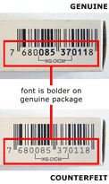
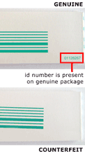

Barcode number on outside packaging box is lighter, not as bold - especially the IKS-OICM number

Reverse side of original patient insert has identification number on the bottom right corner

Additional print (including EXP date) on the aluminum foil of the reverse side of the inside packaging